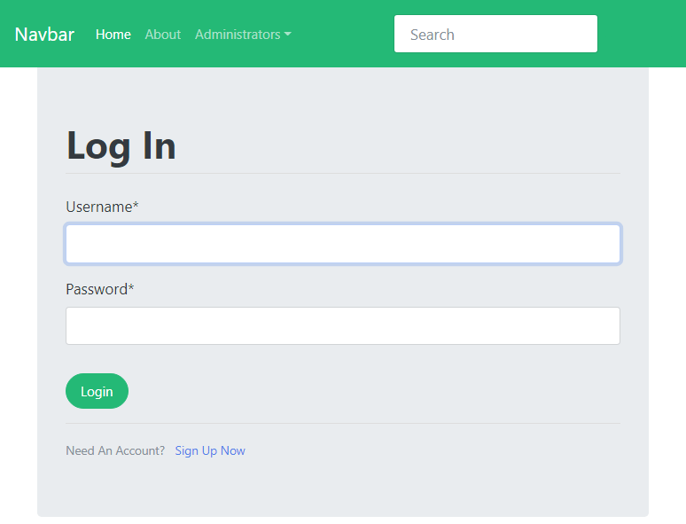
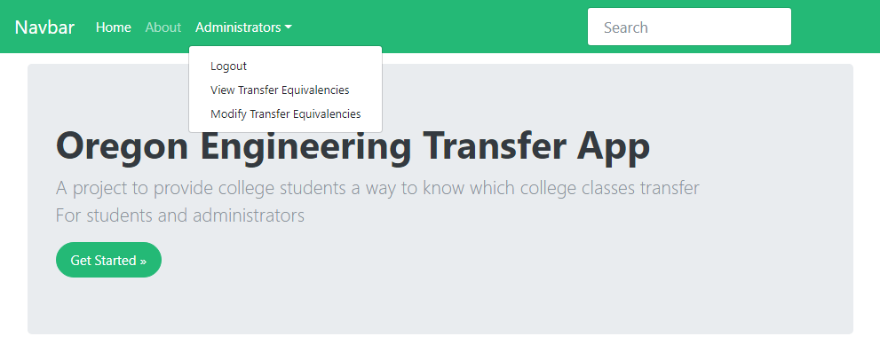
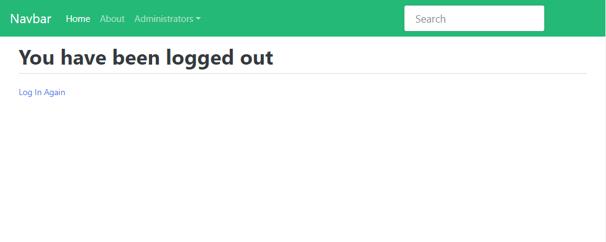
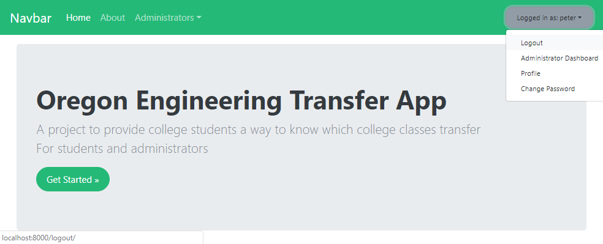

Oregon Engineering College Transfer App - Part 7: User Logout
This is the 7th part of a multi-part series on building a web app with Python and Django. The web app will act as a resource for Engineering students at Oregon Community Colleges who want to transfer to 4-year Universities. The transfer web app will show which classes from their Community College Engineering program will transfer to which classes in a 4-year University Engineering program. In this seventh post, add a way for users to log out of the site. Will will also build a visual indicator into the navbar to show when a user is logged in, and give them a link in the nav bar that gives them an option to logout.
Why do users need to be able to logout?
4-year University administrators need to be able to log in and out of the site. The 4-year University administrators need to be able to log in so that they can post which classes at a Community College transfer to which classes at their 4-year University. Once the 4-year University Administrators make changes, they need to be able to log out and then act like regular site users (see the same view that students see) to see their changes in effect. It is also good security practice to allow users to logout before then exit the site.
Create a logout template
We need to build a logout page so the Univeristy administrators can logout (after they login). To create the logout functionality, first we'll build a new logout.html template. Let's put the logout.html tempate in the templates/users/ directory. The directory strucutre of the entire Django project is below:
├───pages
│ ├───migrations
│ │ └───__pycache__
│ ├───static
│ │ └───css
│ └───__pycache__
├───templates
│ ├───registration
│ └───users
│ ├───login.html
│ └───logout.html
├───transfer_project
│ └───__pycache__
└───users
In the templates/users/logout.html template below, notice how we include the tag {% url 'login' %} so that users can back in again if they want to.
<!-- templates/users/logout.html -->
{% extends 'bootstrap_base.html' %}
{% block content %}
<h2>You have been logged out</h2>
<div class="border-top pt-3">
<small class="text-muted">
<a href="{% url 'login' %}">Log In Again</a>
</small>
</div>
{% endblock content %}
Modify project urls
Now that the logout template is created, we need to create a url pattern that points to the template. When a user browses to https://domain.com/logout, the logout template should pop up. Edit the transfer_project/urls.py file to include a new route for the logout template. We'll use Djangos build in django.contrib.auth.views.LogoutView as the view function. This view is very similar to to Django's built-in LoginView.
# transfer_project/urls.py
from django.contrib import admin
from django.contrib.auth import views as auth_views
from django.urls import path, include
urlpatterns = [
path('admin/', admin.site.urls),
path('login/', auth_views.LoginView.as_view(template_name='users/login.html'), name='login'),
path('logout/', auth_views.LogoutView.as_view(template_name='users/logout.html'), name='logout'),
path('', include('pages.urls')),
]
Modify the nav template to include logout functionality
We have a logout template, a logout url and a logout view. What we need now is a link on the site for users to click so they can actually logout. Let's put the logout link as part of our navigation bar in the page header. We need to modify the nav.html template to accomplish this. Note the tag: <a class="dropdown-item" href="{% url 'login' %}">Login</a>. This tag provides the link to our login page. But when a user is logged in, we want the menu item to show Logout. Django has built in functionality to help with this.
The general structure to change the menu nav menu item depending on if a user is logged in or out is below. Note the user.is_authenticated property. user.is_authenticated is built into Django. If a user is logged in, user.is_authenticated returns True. If a user is not logged in user.is_authenticated returns false.
{% if user.is_authenticated %}
<code>
{% else %}
<code>
{% endif %}
Let's add the user.is_authenticated functionality to the templates/nav.html template.
<!-- templates/nav.html -->
<nav class="navbar navbar-expand-md navbar-dark bg-dark fixed-top">
<a class="navbar-brand" href="#">Navbar</a>
<button class="navbar-toggler" type="button" data-toggle="collapse" data-target="#navbarsExampleDefault" aria-controls="navbarsExampleDefault" aria-expanded="false" aria-label="Toggle navigation">
<span class="navbar-toggler-icon"></span>
</button>
<div class="collapse navbar-collapse" id="navbarsExampleDefault">
<ul class="navbar-nav mr-auto">
<li class="nav-item active">
<a class="nav-link" href="{% url 'home' %}">Home <span class="sr-only">(current)</span></a>
</li>
<li class="nav-item">
<a class="nav-link" href="{% url 'about' %}">About</a>
</li>
<li class="nav-item dropdown">
<a class="nav-link dropdown-toggle" href="https://example.com" id="dropdown01" data-toggle="dropdown" aria-haspopup="true" aria-expanded="false">Administrators</a>
<div class="dropdown-menu" aria-labelledby="dropdown01">
{% if user.is_authenticated %}
<a class="dropdown-item" href="{% url 'logout' %}">Logout</a>
{% else %}
<a class="dropdown-item" href="{% url 'login' %}">Login</a>
{% endif %}
<a class="dropdown-item" href="#">View Transfer Equivalencies</a>
<a class="dropdown-item" href="#">Modify Transfer Equivalencies</a>
</div>
</li>
</ul>
<form class="form-inline my-2 my-lg-0">
<input class="form-control mr-sm-2" type="text" placeholder="Search" aria-label="Search">
<button class="btn btn-outline-success my-2 my-sm-0" type="submit">Search</button>
</form>
</div>
</nav>
Run the local server and login
Start the local server with:
(transfer)$ python manage.py runserver
Browse to http://localhost:8000 and select the [Administrators] dropdown from the navigation bar at the top of the page. Click the [Login] link.

The login page should look something like this:

Login with the superuser username and password we created earlier. After we login, we are directed back to the homepage. Now that we are logged in, if we click the [Administrators] nav menu item, we see an option to logout (where as before we saw an option to login). Cool!

If we click [Logout], we are directed to the logout page:

If we click the [Log in Again] link, we are directed back to the login page
Neat.
Show user logged in status in nav bar
Now let's build a way to show users that they are logged in. Right now, you have to click the [Administrators] link and see if Login or Logout is an option. This is the only way for a user to tell if they are logged in or logged out. We also want to provide a way for users to see their username, modify their profile, change their password and see their 4-year university's dashboard. I think we can fit all of this into the nav bar using some templating logic, but it's a lot for one template. So let's break up the functionality into a couple templates. A chunck of html tags are rendered if the user is logged in and a chuck of html tags are rendered if the user is logged out. First modify the templates/nav.html template to include logic that shows different things in the nav bar depending on if a user is logged in or logged out. Note the {% include ' ' %} tag. These are the sections of html we need to write in different files.
<!-- templates/nav.html -->
<nav class="navbar navbar-expand-md navbar-dark bg-dark fixed-top">
<a class="navbar-brand" href="#">Navbar</a>
<button class="navbar-toggler" type="button" data-toggle="collapse" data-target="#navbarsExampleDefault" aria-controls="navbarsExampleDefault" aria-expanded="false" aria-label="Toggle navigation">
<span class="navbar-toggler-icon"></span>
</button>
<div class="collapse navbar-collapse" id="navbarsExampleDefault">
<ul class="navbar-nav mr-auto">
<li class="nav-item active">
<a class="nav-link" href="{% url 'home' %}">Home <span class="sr-only">(current)</span></a>
</li>
<li class="nav-item">
<a class="nav-link" href="{% url 'about' %}">About</a>
</li>
<li class="nav-item dropdown">
<a class="nav-link dropdown-toggle" href="https://example.com" id="dropdown01" data-toggle="dropdown" aria-haspopup="true" aria-expanded="false">Administrators</a>
<div class="dropdown-menu" aria-labelledby="dropdown01">
{% if user.is_authenticated %}
<a class="dropdown-item" href="{% url 'logout' %}">Logout</a>
{% else %}
<a class="dropdown-item" href="{% url 'login' %}">Login</a>
{% endif %}
<a class="dropdown-item" href="#">View Transfer Equivalencies</a>
<a class="dropdown-item" href="#">Modify Transfer Equivalencies</a>
</div>
</li>
</ul>
{% if user.is_authenticated %}
{% include 'logged_in_nav_dropdown.html' %}
{% else %}
{% include 'login_nav_button.html' %}
{% endif %}
</div>
</nav>
Now we need to build the two templates we just specified in the nav.html template:
logged_in_nav.htmlandlogin_nav_button.html
<!-- templates/logged_in_nav_dropdown.html -->
<ul class="nav justify-content-end">
<li class="nav-item dropdown">
<a class="btn btn-secondary dropdown-toggle" href="https://example.com" id="dropdown01" data-toggle="dropdown" aria-haspopup="true" aria-expanded="false"> Logged in as: {{ user.username }}</a>
<div class="dropdown-menu" aria-labelledby="dropdown01">
<a class="dropdown-item" href="{% url 'logout' %}">Logout</a>
<a class="dropdown-item" href="#">Administrator Dashboard</a>
<a class="dropdown-item" href="#">Profile</a>
<a class="dropdown-item" href="#">Change Password</a>
</div>
</li>
</ul>
Now the template that shows the login button (if the user is not logged in).
<!-- templates/login_nav_button.html -->
<ul class="navbar-nav justify-content-end">
<li class="nav-item active">
<a class="btn btn-secondary" href="{% url 'login' %}">Login<span class="sr-only">(current)</span></a>
</li>
</ul>
Run the local server to see the results
OK. Coding for logging in and out is complete. Let's see the results. Run the local server and login and log out with the nav buttons.
(transfer)$ python manage.py runserver
When the user is not logged in, the page looks like:
If we click the [Login] button on the upper right, we are brought to the login screen
After we log in, we are taken back to the homepage, but now the menu in the upper right shows our user name and has some additional options.

If will click [logout] from the drop down menu, we are brought back to log out screen and the button in the upper right has gone back to a login button. Awesome!

Build tests for logout pages
Since we have a new page, we need to write some new tests. We already have a couple tests. There is a test for the homepage, about page and login page. We can improve our test coverage by adding tests for the logout page.
# pages/tests.py
...
class LogoutPageTests(SimpleTestCase):
def test_logout_page_status_code(self):
response = self.client.get('/logout/')
self.assertEqual(response.status_code, 200)
def test_about_view_uses_correct_template(self):
response = self.client.get(reverse('logout')
self.assertEqual(response.status_code, 200)
self.assertTemplateUsed(response, '/users/logout.html')
Now let's run our tests and see if they all pass. At the Anaconda Prompt, type:
(transfer)$ python manage.py test
Summary
In this post we created a logout template and and view. We changed the functionality of the nav bar to show different items depending on if we are logged out or logged in. We see a login button if we are logged out, and we see our username with a drop down menu if we are logged in.
Future Work
Next, we'll build a profile page for users to specify and modify their user profile. Things we want to include on the profile page are username, email, university and job. We want to provide a way for the user to change and modify these options.